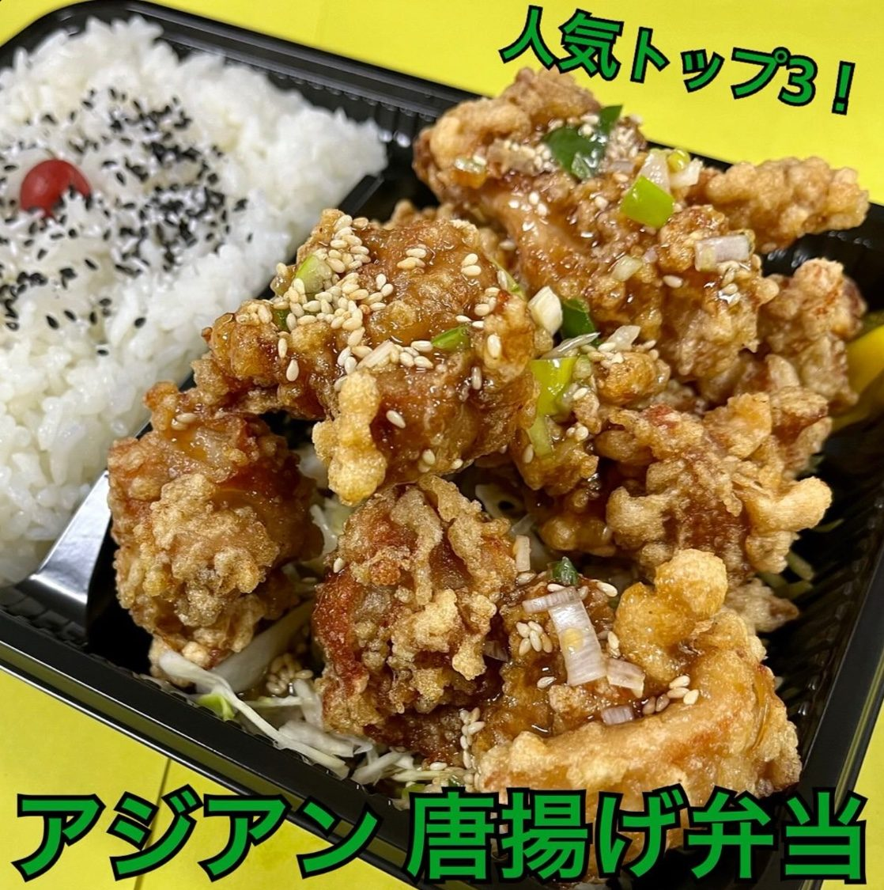
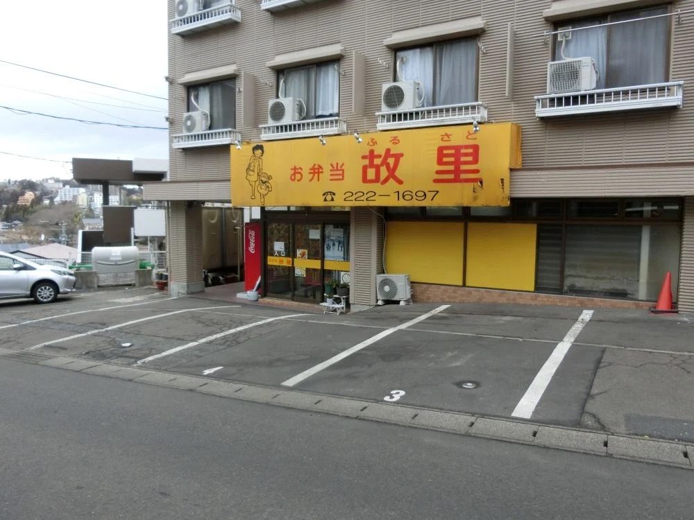

唐揚げ弁当 普通
外はサックサク、中はジューシー。まずはこの定番の味から。
670円（税込）迷ったらまずはコレ！ 故里の唐揚げ弁当は、14種類の味から選べます。
外はサックサク、中はジューシー。まずはこの定番の味から。
670円（税込）
人気トップ3甘辛だれにたっぷりのネギとゴマ。ご飯がすすむ味。
670円（税込）まろやかなわさびマヨソースがクセになる、ツンとさわやかな一品。
670円（税込）唐揚げ弁当・唐揚げおかず・唐揚げ弁当ミニで選べます
学生さんから地域のみなさんまで。毎日食べたくなるお弁当を作っています。

川内の坂道沿い、黄色い大きな看板のお店が「お弁当 故里」です。
講義の合間や部活帰り、お仕事のお昼ごはんに。気軽に立ち寄れる街のお弁当屋さんです。
注文を受けてから心を込めて。あたたかいお弁当をお渡しします。
お腹いっぱい食べてほしいから。ご飯の大盛・超大盛もOK。
講義の合間やお昼休みにも。サッと立ち寄れる好立地です。
朝9:30から夜20:30まで、毎日営業しています。
部活・サークル・イベント・会議などのまとめ注文はお気軽にご相談ください。
ご予約はお電話で受け付けています。
学生さん・未経験の方も歓迎です。
新メニューや日替わり情報はこちらでチェック
| 店名 | お弁当 故里（ふるさと） |
|---|---|
| 住所 | 〒980-0866 宮城県仙台市青葉区川内三十人町44-11 ハッピー館 |
| アクセス | 地下鉄東西線 川内駅・東北大学からすぐ 黄色い看板が目印です |
| 電話番号 | 022-222-1697 |
| 営業時間 | 9:30〜20:30 |
| 定休日 | なし（年中無休） |
| ご予算 | お一人様 〜1,000円 |
| お支払い | 現金のみ |
| ご注文 | 店頭・お電話 大量注文も承ります |
| @bento_furusato |